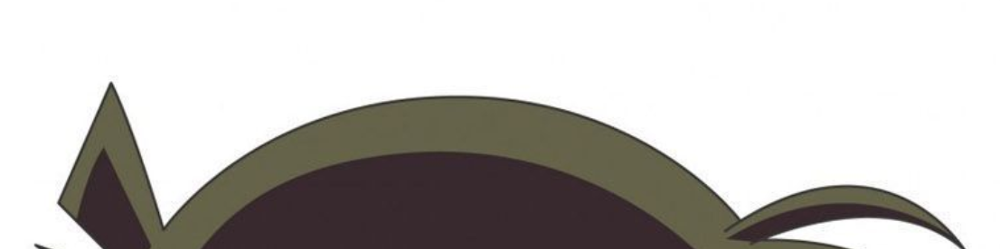

WER IST DAS?
Du weißt nicht genau wie du hier rauskommen sollst. Jigsaw scheint alle Ausgänge und Fenster mit Gittern verriegelt zu haben. So schnell kommst du hier also nicht raus. An einem Fenster hörst du eine Stimme, die dir sehr bekannt vorkommt. Leider ist das Fenster zu hoch um heraus zu schauen. Du kannst nur einen kleinen Teil der Person auf der anderen Seite erkennen.

Wer ist diese Person?